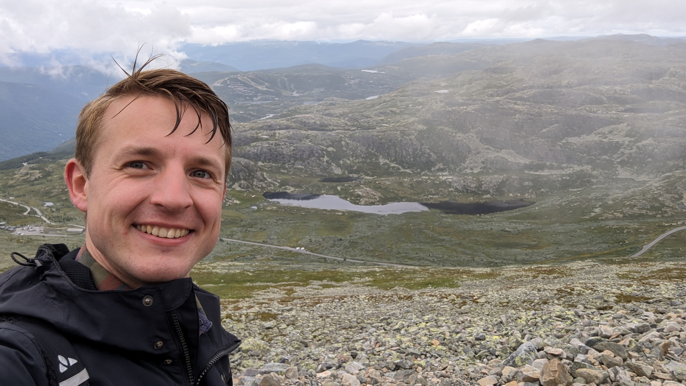

Over mij
_____________________

Ik ben in dienst bij de Rijksinspectie Digitale Infrastructuur (RDI) en werk aan standaardisatie van nieuwe apparatuur voor draadloze communicatie en radiodeterminatie (radar).
Het werk is technisch en verreist samenwerking met internationale partijen.
Mijn achtergrond is een bachelor in theoretische natuurkunde en een master in toegepaste natuurkunde. Daarbij besteedde ik aandacht aan microelectronica en computer science.
In het master project produceerde en characteriseerde ik thin-film microelectronica van rare-earth nickel-oxiden. Hierbij werden geavanceerde lab instrumenten gebruikt waaronder: AFM, PLD, XRD, XRR, UV-lithografie, RIE en opdamping.
Het doel was om nieuwe materialen en elektronische componenten te ontwikkelen voor neuromorphic computing, oftewel energie zuinige hardware maken voor toekomstige AI toepassingen.
Dit werk heeft in 2024 tot een publicatie geleid als 2e autheur.
Ik sloot mijn opleidingtraject af met een stage bij Photonis. Daar heb ik een optische meetopstelling ontworpen voor het meten van licht intensiteit met een hoog dynamisch bereik.
Talen
_____________________
Engels
Duits
Programmeren
_____________________
C++ & (CUDA) C
HTML
CSS
Java
Office (Word, Excel, Powerpoint)
Soft
_____________________
Referenties
_____________________
Bachelor thesis: "Towards Evaluating Many-Dimensional Physics Problems through Parallel Evaluation of Taylor Functions".
Master thesis: "Self-oscillators of epitaxial rare-earth nickelate thin films".
Publicatie in "Frontiers in Materials": "Mixed volatility in a single device: memristive non-volatile and threshold switching in SmNiO3/BaTiO3 devices".